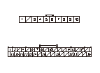
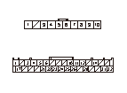

DTC B1626
DTC B1626:
ノブ式イグニッションECUが応答しない
再現テスト1
1-1
HDSをデータ リンク カプラに接続する
1-2
イグニッション スイッチをON（
II
）にする
1-3
HDSでDTCをクリアする
1-4
イグニッション スイッチをOFFにしてからON（
II
）にする
1-5
HDSの‘‘Hondaスマート キー’’を選択し、‘‘テスト モード メニュー’’でセルフ チェックを行う
1-6
HDSの‘‘Hondaスマート キー’’を選択し、‘‘テスト モード メニュー’’でDTCを確認する
◆ DTC B1626を表示するか
YES
-
ステップ
2
へ進む
NO
-
一過性故障、現在システムは正常、スマートECUとノブ式イグニッション間カプラの接続状態の確認をする
再現テスト2
2-1
ノブ式イグニッションの再登録を行う
2-2
イグニッション スイッチをOFFにした後、イグニッション スイッチのON（
II
）、OFFを10回繰返す
2-3
HDSの‘‘Hondaスマート キー’’を選択し、‘‘テスト モード メニュー’’でDTCを確認する
◆ DTCB1626を表示するか
YES
-
ステップ
3
へ進む
NO
-
一過性故障、現在システムは正常
ノブ式イグニッション電源の確認1
3-1
イグニッション スイッチをOFFにする
3-2
ヒューズ ボックスNo.1 （10A） ヒューズを点検する
◆ ヒューズは正常か
YES
-
ステップ
4
へ進む
NO
-
ヒューズ ボックスNo.1 （10A） ヒューズを交換し、再度点検を実施する。再度ヒューズが溶断する場合はコードの短絡を点検する
ノブ式イグニッション電源の確認2
4-1
ノブ式イグニッションECUから10Pカプラの接続を外す
4-2
イグニッション スイッチをON（
II
）にする
4-3
ノブ式イグニッションECU 10PカプラのNo.9端子とボディ アース間の電圧を測定する
◆ バッテリ電圧か
YES
-
ステップ
5
へ進む
NO
-
コードの断線
ノブ式イグニッション アース コードの断線点検
5-1
イグニッション スイッチをOFFにする
5-2
ノブ式イグニッションECU 10PカプラのNo.6端子とボディ アース間の導通を点検する
◆ 導通があるか
YES
-
ステップ
6
へ進む
NO
-
コードの断線またはアース不良（G501）
スマートECUとノブ式イグニッション間（IGNCONT、IGNTRX、ノブ スイッチ、キー スイッチ、ローテート スイッチライン）の断線点検
6-1
スマートECU Aカプラ（36P）のNo.26端子とノブ式イグニッションECU 10PカプラのNo.4端子間、No.33端子とNo.8端子間、スマートECU Bカプラ（32P）のNo.14端子とノブ式イグニッションECU 10PカプラのNo.3端子間、No.12端子とNo.7端子間、No.6端子とNo.5端子間の導通を点検する
◆ 導通があるか
YES
-
ステップ
7
へ進む
NO
-
コードの断線


スマートECUとノブ式イグニッション間（IGNCONT、 IGNTRX、ノブ スイッチ、キー スイッチ、ローテート スイッチライン）の短絡点検
7-1
ノブ式イグニッションECU 10PカプラのNo.3端子、No.4端子、No.5端子、No.7端子、No.8端子とボディ アース間の導通を点検する
◆ 導通があるか
YES
-
コードのボディ短絡
NO
-
ステップ
8
へ進む
ノブ式イグニッション（IGNTRXライン）の出力点検
8-1
スマートECU Aカプラ（36P）およびスマートECU
Bカプラ
（32P）を接続する
8-2
ノブ式イグニッションECU 10PカプラのNo.5端子とボディ アース間に電圧計を接続する
8-3
イグニッション スイッチをON（
II
）にする
8-4
‘‘ファンクション テスト’’の‘‘IGNTRX駆動’’を選択し、強制駆動させる
◆ 強制駆動時、電圧が約12Vから0Vに変化するか
YES
-
ステップ
9
へ進む
NO
-
スマートECU不良
ノブ式イグニッション（IGNCONTライン）の出力点検
9-1
ノブ式イグニッションECU 10PカプラのNo.4端子とボディ アース間に電圧計を接続する
9-2
‘‘ファンクション テスト’’の‘‘キー ノブ パワーライン（IGNCONT）駆動’’を選択し、強制駆動させる
◆ 強制駆動時、電圧が約0Vから5Vに変化するか
YES
-
ノブ式イグニッションECU不良
NO
-
スマートECU不良